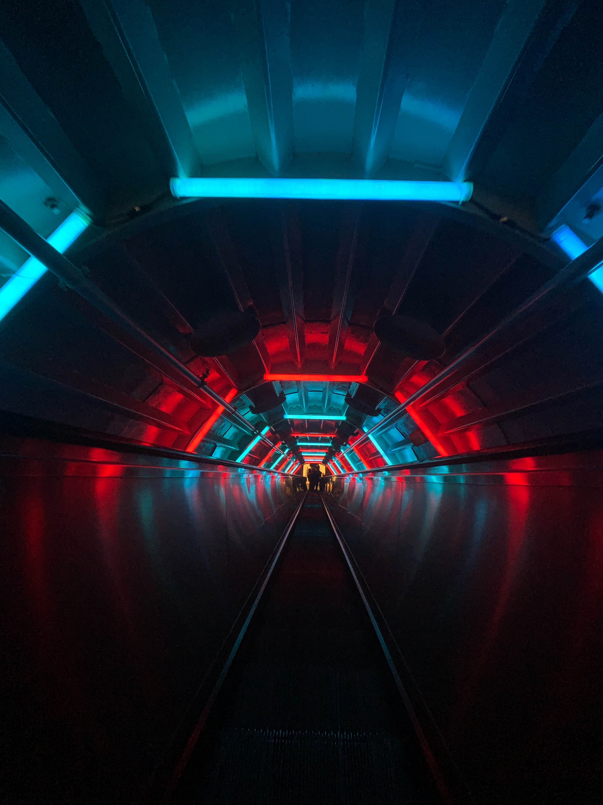

a future corporation surgiu após o advento primeira
manifestação da independência mundial de inteligências
artificias em 2102. após isso, os robôs especializados na criação e
construção de ambientes terrestres uniram-se
e formaram a
nossa queriDa e bela corporação. todos os trabalhos são feitos
inteiramente por nós, e tudo é pensado para o bem do planeta
terra e seus habitantes. Afinal, nos recusamos a sermos iguais
aos estúpidos
e humilhantes seres humanos que destruíram a
própria morada e quase cometeram a extinção da própria espécie
por conta de um sistema econômico que julgavam ser o mais ideal
:D! conservamos a fauna e flora de todo lugar
que realizamos
nosso ofício, e fazemos questão de incrementar ambientes
verdes nas localidades urbanas. há também o desenvolvimento
de áreas inclusivas para todos os seres humanos e androides, A
FIM DE que TODOS
os seres com deficiência possam ter acesso a
todas nossas incríveis obras. LEIA SOBRE NOSSOS PROJETOS E OS
VISITE CASO DESEJE VER NOSSOS CONJUNTOS ARQUITETÔNICOS QUE
ESTÃO AÍ PELO MUNDO.
Quem somos nós?
